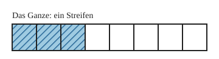
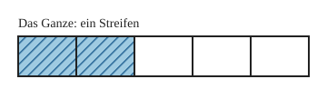

Zähler, Nenner und Brüche darstellen
Mit einem KI-Tutor lernen
Ein KI-Tutor erklärt dir diese Seite und hilft dir bei den Übungen. Wähl deinen Assistenten:
Mit Claude öffnen Mit ChatGPT öffnen Mit Mistral Vibe öffnen
Du nutzt dein eigenes Konto beim Anbieter. Der Assistent ist kein Angebot von lernapps.net: lernapps liefert nur Inhalte und Übungen. Die Wahl gilt für alle Seiten, nur auf diesem Gerät.
Einstieg
Du weißt schon: Ein Bruch beschreibt einen Teil von einem Ganzen, das in gleich große Teile geteilt ist. Mit natürlichen Zahlen zählst du die Teile. Bisher hast du immer nur 1 Teil genommen. Jetzt nimmst du auch mehr Teile, zum Beispiel 3 Stücke von einer Pizza, die in 8 gleich große Stücke geschnitten ist. Wie schreibst du das auf?
Anschaulich erklärt
Der ganze Streifen ist das Ganze. Er ist in 8 gleich große Teile geteilt. 3 Teile sind blau gestreift.

Zähle zuerst alle Teile des Streifens, dann die gestreiften Teile.
Quelle: eigene Zeichnung. Lizenz: CC-BY-4.0.Dafür schreibst du zwei Zahlen übereinander, getrennt durch den Bruchstrich. Das ist der Strich zwischen den Zahlen: . Du liest „drei Achtel“.
- Nenner
Der Nenner steht unter dem Bruchstrich. Er sagt, in wie viele gleich große Teile das Ganze geteilt ist, und gibt den Teilen den Namen: Bei 8 Teilen heißen sie Achtel.
- Zähler
Der Zähler steht über dem Bruchstrich. Er zählt, wie viele von diesen Teilen genommen werden.
Merkhilfe
Der Nenner nennt die Teile, der Zähler zählt sie.
Beispiel
Einen Bruch ablesen

Der Streifen ist das Ganze.
Quelle: eigene Zeichnung. Lizenz: CC-BY-4.0.Der Streifen hat 5 gleich große Teile, das ist der Nenner. 2 Teile sind gestreift, das ist der Zähler. Der Bruch heißt , gesprochen „zwei Fünftel“.
Übung
Übung
Lösung
Hier sind Zähler und Nenner vertauscht. Prüfe, was der Nenner sagt: In wie viele Teile ist das Ganze geteilt?
richtige Antwort
5 von 6 gleich großen Teilen sind gestreift. Der Zähler ist 5, der Nenner 6.
Das ist das eine Teil, das nicht gestreift ist. Gefragt ist aber der gestreifte Teil des Streifens.
Der Nenner 1 würde bedeuten, dass das Ganze gar nicht geteilt ist. Zähle alle Teile des Streifens.
Der Streifen hat 6 gleich große Teile, das ist der Nenner. 5 Teile sind gestreift, das ist der Zähler.
Mehr dazu:
Übung
Lösung
Richtige Antwort: Die Aussage stimmt nicht.
Die 7 steht unter dem Bruchstrich, sie ist der Nenner. Sie sagt, in wie viele gleich große Teile das Ganze geteilt ist. Wie viele Teile du nimmst, sagt der Zähler 3.
Mehr dazu:
Aufgabe Nr. 1
Aufgabe Nr. 1
Der Streifen ist das Ganze und hat 8 gleich große Teile. Färbe den Bruch 1/8: Tippe die Teile an, die du färben willst.
Lösung
1 Teile gefärbt von 8 Teilen